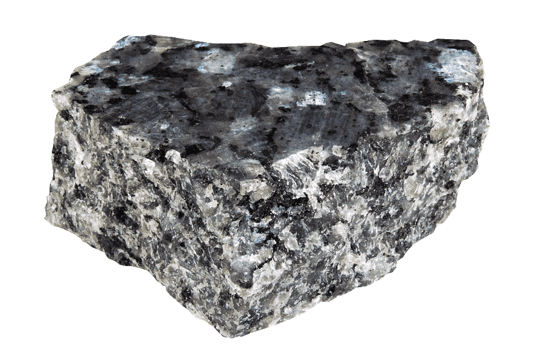
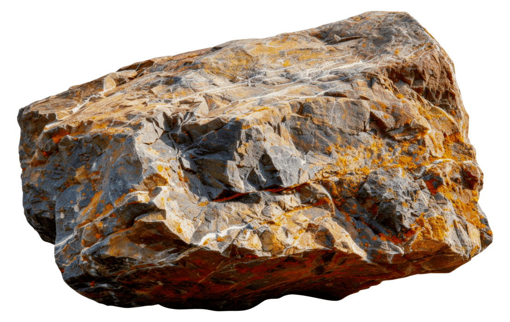
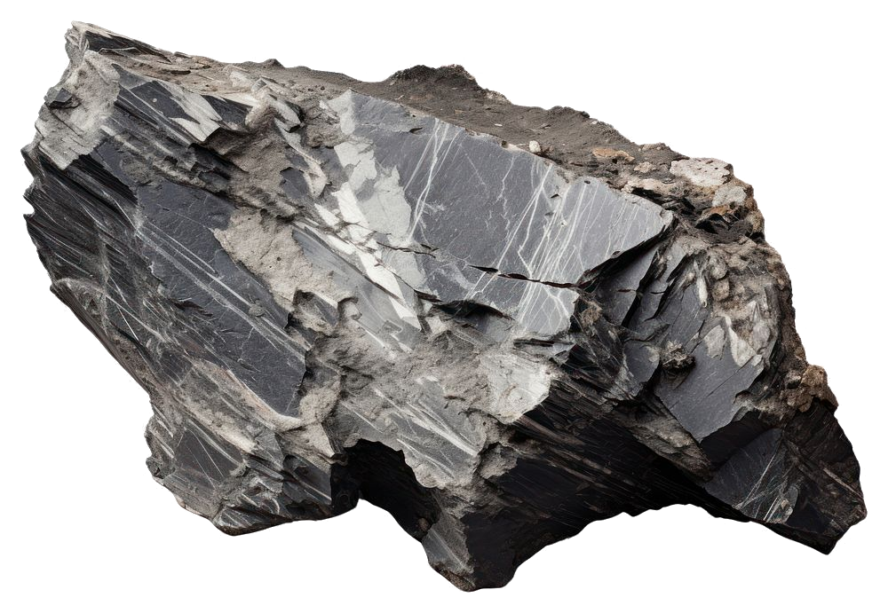

Descubra o que a Terra guarda em suas rochas
Do magma que esfria ao sedimento que se compacta, as rochas contam a história do planeta. Explore os três grandes grupos, acompanhe o ciclo das rochas e teste o que aprendeu.
Toda rocha tem uma origem
As rochas são classificadas de acordo com a forma como se originaram. Escolha um grupo para aprofundar.

Nascidas do fogo
Formadas pelo resfriamento e solidificação do magma ou da lava. Exemplos: granito e basalto.

Camadas do tempo
Formadas pelo acúmulo e litificação de sedimentos. Guardam fósseis. Exemplos: arenito e calcário.

Rochas transformadas
Surgem quando outra rocha é alterada por calor e pressão sem se fundir. Exemplos: mármore e gnaisse.
Os três grupos lado a lado
| Grupo | Como se forma | Aspecto típico | Exemplos | Usos comuns |
|---|---|---|---|---|
| Ígneas (magmáticas) | Resfriamento e solidificação de magma ou lava | Cristais entrelaçados, grandes (intrusivas) ou muito pequenos (extrusivas); sem camadas | Granito, gabro, basalto, riolito | Construção, revestimentos, brita |
| Sedimentares | Deposição, compactação e cimentação de sedimentos | Camadas (estratos); podem conter fósseis; grãos ou cristais de precipitação | Arenito, conglomerado, folhelho, calcário, carvão | Construção, cimento, combustíveis, reservatórios de água e petróleo |
| Metamórficas | Transformação de rocha preexistente por calor, pressão e fluidos, no estado sólido | Minerais orientados em bandas ou folhas (foliação) ou aspecto granular recristalizado | Gnaisse, xisto, ardósia, mármore, quartzito | Pisos, telhados, revestimentos, esculturas |
Nenhuma rocha é para sempre
Ao longo de milhões de anos, uma rocha pode se transformar em outra. Esse processo contínuo é o ciclo das rochas — e aqui você pode explorá-lo em um diagrama interativo.
Vídeo explicativo
Este espaço pode receber um vídeo quando ele estiver pronto.
Quer continuar explorando?
Cadastre seu e-mail e receba curiosidades sobre rochas, minerais e a história do planeta.
Fique de olho na sua caixa de entrada: as novidades chegam em breve.